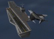
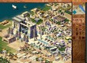
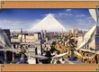
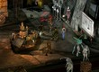
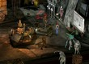

| Пятница, 19 ноября 1999 года (12.18) - Denis[FAq] |
|
Обзор Q3. Ладно, хватит рассуждений, разговор теперь будет чисто о ку3. Начать надо наверно с нового мнею: естественно рульно что теперь можно прямо из кваки сохранить и загрузить любой конфиг, также есть раздел для просмотра демок, и каких-то роликов (последнее помоему гон). Итак первое: как и ожидалось, очередной тест вышел лучше предыдущего, особенно хочется отметить, то что Кармак наконец-то прислушался к мнению всех квакеров мира :) и базука теперь стреляет быстрее, правда радиус взрыва уменьшили (зато меткость быдет повыше), ВЕРНУЛИ рельсу из ку2!!! даже я начал попадать (Scorp свидетель, что я туго с нее стрелял), следуещее - то, чего так долго ждали первоквакеры, и хотели попробовать кудвакеры - быстрое переключение стволов, теперь оно стало еще быстрее чем в предыдущих тестах. Второе: Чуть-чуть доделали уровни, и.... добавили новый q3dm1, уровень совсем небольшой, но давольно играбельный (плазмагун - рулеззз). Сделали еще новые эфекты к пулькам, раскиданным по уровню. Чуть не забыл, я испугался, когда увидел сингл плэйер (смотря скрины я уже видел какого-то монстра :) ), но там все не плохо, битва проходит по уровням с ботами (про них отдельно), как в мясе так и в дуэли. Естественно не забыли про мульти: здесь все отлично, есть встроеный Spy для любителей играться по инету, ну и конечно можно создать как дуэльный, мясной так и тимплейный сервак (CTF пока нет, но обещают) А ВОТ ЗДЕСЬ У МЕНЯ ВЫКЛЮЧИЛИ СВЕТ, И ДВЕ СТРАНИЦЫ ТЕКСТА В НИКУДА, СЕГОДНЯ ПИСАТЬ ЛЕНЬ ЖДИТЕ ПОЗЖЕ. Одно могу сказать про ботов, вы у них всегда на прицеле, даже сквозь стену (если недаоеко), а попадают они не всегда, т.к. по системе кого-то там у них типа рука дрожит :))) |
| Четверг, 18 ноября 1999 года (19.42) - Типа народ |
|
Happy birthday to you! Завтра у Speaker'а день респавна... Вчера было у Crown'а... Позавчера родился клан под странным названием BBQ (aka Bad Boys Quakers). По этому поводу местные "отцы" решили устроить всеобщее гуляние aka запой... Состав клана на сегодняшний день
таков (включает в себя нескольких
бывших членов кланов Snipers, Nobles, 38): Девиз клана - Anti-UU :). Великий отец VooDoo.38 собирается полностью забить на Quak'и и дать дорогу молодому поколению... |
| Вторник, 2 ноября 1999 года (8.13) - VooDoo.38 // icq 37074020 |
| Новостей-то и нету почти... А начальство
одолело, напиши да напиши, вот собственно и пишу
:). Новость первая: В нашем клубе поменялся админ, теперь вместо Сергея (Мороза) работает Женя (aka [FAq] Patriot). Новость нумбер два: Теперь можно купить машину минимум на 10 рублей (т.е. на 40 минут). Новость номер три: Квакерские кланы 38 и Nobles объединились, точнее, ExNobles'ы (не все, конечно) вступили в 38. Еще раз напоминаю, что 5-6 ноября в клубе F10 будет проводиться тимплейный чемпионат по Quake II 3 on 3. Спешите зарегистрироваться, а то не успеете. |
| Среда, 20 октября 1999 года (12.21) - VooDoo.38 // icq 37074020 |
| В ночь с 23 на 24 октября (т.е. с субботы на воскресенье) в нашем клубе организовывается чемпионат по StarCraft - Литроболлу :). Чемп дуэльный, проводится по системе Double Elimination. За каждую победу выдается по бутылке (0.5) пива. Таким образом в финале встретятся не сильнейшие СтарКрафтеры, а болле устйчивые к алкоголю люди :). Стоимость участия - ХЗ, еще надо у начальства спросить. |
| Воскресенье, 17 октября 1999 года (12.42) - TroubLe [FAq] |
| Разговоры о чемпионате начались еще в
начале лета… Регистрацию стали проводить за
неделю до турнира, таблица сразу же забилась
Иркутскими Папами, затем по аське стали
прилетать мессаги о просьбе зарегистрировать
Улан-Удэ'новских Отцов.. Всем хотелось выяснить,
кто же круче… В общем-то дело было не в самом
призе, а в том какой же клан окажется сильнее… Да
и просто этот турнир давал возможность
пообщаться с различными людьми, узнать уровень
игроков, выпить две бутылки 7UP, получить на халяву
значок, спокойно посидеть с хорошими людьми за
столиком смачно попивая пивко… В общем, планы
были грандиозными. Но не смотря на грядущее
"спокойствие", тренировки шли полным ходом…
Заходя в клуб я постоянно видел местных ребят за
игрой в Q1. Все ожидали приезда таких кланов как [M]
- Маньяки, [DM] - Dizmembaz и [UC] - Unicornus. Медленно, но верно,
приближался день крутой разборки. На кануне 9-10
октября, а точнее в пятницу в 20.30 началась
жеребьевка, на которой присутствовали почти все
участники… Жеребьевку проводили не какими-то
бумажками, а настоящими игровыми бочонками на
которых были цифры соответствующими номерам
зарегистрировавшимся участников…
Присутствующие так и лезли через головы своих
сотоварищей, к столу прорваться было практически
не возможно… Бочонки тянула рандомайзер
Наталья… Со стороны то и дело слышались вздохи
горечи и облегчения, жеребьевка первого круга
прошла как надо, каждому отцу досталось по куску
мяса для возбуждения аппетита… В субботу утром, в 10.00 как и было запланировано начался первые круг. Самыми напряженными папскими играми были: Alchemist[DM] попал под гусеницы MоXнатого [MX]TAHK'а, [DM]dj Slave чуть было не зарулил [MX]Razor'a, a [MX]T-P-V(он же Krops) задавил [UC] Serj(он же [UC]Merlin).Одним словом, все Иркутские Папы перешли в следующий круг. После первой битвы осталось всего 32 человека т.к. Double Elimination работал со второго круга, именно там оставшиеся поделились на два сословия "отцы" и "лузеры". В лузерах оказался Папа [FAq]MaxiK, Ghost[T], MotherFucker, [DM]Porosyuk. Как не странно, но [DM]M.Porosyuk просрал SC, посчитав его за ламера, не дооценив сил лез на ракеты. А что до SC,- он знал свое "мышиное" дело(благодаря чему он и вылез, замочив M.Porosyuk'a на овертайме), я случайно зарулил Макса а M4-Slayer выиграл у Ghost[T] со счетом 1:0 … Третий круг прошел без особых происшествий, только немного не повезло [MX] - Razor'у и Drive[FAq],они свалились в лузера… Из этих лузерских матчей можно отметить следующие - [Faq]MAXik vs [N]Devil, счет 70:-11 (избиение малолетних) … Время примерно 20.00 мы немного выбились из графика, часа так на четыре, но ничего страшного… Мля, что тут началось!!! Вдруг откуда не возьмись появилась очень много народу, просто нечем было дышать… я устал орать и надорвал себе голос… на лицах участников было видно изнеможение и усталость… все это сказывалось на игроках…Наталья снова отсортировала толпу… Творилось нечто невообразимое: свои попадали со своими, брат опускал брата. Так что 4-ый круг был чуть ли не самым напряженным….Да… положение нешуточное… из наших "впухал" больше всех Patriot[Faq](его так расперло от минералки что он не соображал где и с кем находится) - ему выпал M3-Dexter… также можно отметить битву [MX] T-P-V vs [MX]TAHK, далеко не последняя по зрелищности схватка(хотя все равно тяжело вышибать одноклановцев). [DM2]Legolas vs [MX]NightMare и , пожалуй , [DM]Porosyuk vs [UC]Paradoxxx. Итак, в 5-ом круге , в отцах , [Faq]Trouble рулит [MX]TAHK'а , в это же время M3-Dexter проигрывает M4-Slayer'y (все это происходит на DM2) , ну и , после сражений лузеров , образовалась финальная четверка : 2 иркутских Отца [Faq]Trouble , [Faq]Maxik и M4-Slayer с M3-Dexter из У-У. Наконец-то долгожданный ФИНАЛ!!! Это пожалуй было самым интересным моментом чемпионата… Играли по круговой системе: каждый с каждым на трех картах DM2, DM4, DM6. Самой первой картой была DM6, именно там мы с Максом боялись потерять очки, но штамповка и немного удачи сделали свое дело … Самой захватывающей игрой этого круга была игра M4-Slayer'а со мной, как сказал [MX]Razor - "…народившись возле красного броника он пустил там корни…" . Воспоминания очевидцев: Drive[FAq] - "как раз, тогда я сидел за Лехиной спиной и наблюдал этот замечательный матч, я уже начал было засыпать, как вдруг примерно на 18 минуте матча толпа взревела как будто перевернулась цистерна с самогоном, Леха все таки завалил "толстую крысу"… И тут я начал было отсчитывать секунды последней минуты, как вдруг толпа снова взревела, но на этот раз орали У-У, сидевшие в противоположной стороне комнаты… Расслабившись и потеряв бдительность TroubLe[FAq] дарит фраг Slayer'у… Начался овертайм… Примерно на 5-й минуте Леха выпрыгивая из за угла и по стандартной системе пускает в сторону красной брони пару пороховых зарядов, Slayer натыкаясь на рокету рвется на куски… снова крик, обмороки и поздравления…". На DM2 я проигрываю только Максу, а Макс рвет всех остальных… Для победы мне нужно всего одно очко!!! Именно это очко мне дарит [FAq]MaxiK(Большой сенкс ему за это). Итог: у меня 6 очков, у Макса и Slayer'а по 5 очков, а у Dexter'а меньше всех… Начинается последняя, решающая битва между [FAq]Maxik и M4-Slayer за второе место, где Макс ему проигрывает на DM6… Таким образом заканчивается финальная игра открытого чемпионата по Quake… В общем Иркутск рулит!!! |
| Вторник, 12 октября 1999 года (9.33) - VooDoo.38 // icq 37074020 |
| Kick him when he's down, yeah... (с) The Offspring И вот закончился очередной Чемпионат, уже третий по счету... Я имею ввиду не всякие там мини-чемпы, а настоящие Чемпионаты (именно с большой буквы). Игра, в очередной раз, была Quake (на этот раз Quake1). Опять приехали отцы из Улан-Удэ, конкретно кланы Maniacs и Dismembaz. Но в этот раз порвать наших им не удалось... Напомню, на двух прошлых чемпионатах (по Quake2). У нас было только одно место в финале и то третье :( (под нами я подразумеваю Иркутских квакеров). Ввиду того, что я не присутствовал ни на одном круге, кроме первого, подробного отчета не ждите... Могу сказать только, что на первом круге вылетели почти все Dismembaz'ы под мощным напором наших MatriX'ов (молодцы ребята, так держать!). Также чемпионат почтил своим присутствием бывший чемпион г. Иркутска [FAq] MAXik. Из отцов в финал прошли TroubLe [FAq] (Иркутск) и M4-Slayer (У-У), а из лузеров [FAq] MAXik (Иркутск) и M3-Dexter (У-У). К сожалению, как видите, в финале не было ни одного MX'а... Надо сказать, немного не везло с жеребьевкой, свои сбрасывали своих... На первом чемпе по ку2 не везло Улановцам (бывали четверки, где играло по четыре Улан-Удэнца), на втором - нам (два раза FAq'и играли друг с другом и один раз - AoA). В этот раз не везло всем :(. Как вам такие пары - TroubLe [FAq] vs [FAq] Maxik, [MX] TaHk vs [MX] Krops, M4-Slayer vs M3-Dexter. Свои убивали своих в отцах, но в лузаках вроде везло всем финалистам :). С разрешению [MX] TaHk'a публикую его взгляд на одну
из финальных игр TroubLe [FAq] vs M4-Slayer (два основных
претендента на победу). (Я, правда, его разрешению
не спрашивал, но, думаю, он разрешит :). Итак, взято
со странички MatrixX (с
небольшими моими поправками): Таким образом, места расположились так (Иркутск
рулит): Еще одна цитата из новостей MatriX'ов (об игре в
СтарКрафт с У-У): В Quake II сыграть нормальной командой так и не получилось. Должны были играть [FAq] MAXik, VooDoo.38, Denis [FAq] и Scorpion.38... а играли VooDoo.38, Scorpion.38 и Demon.38. Вот и рузультат - выиграли только одну игру :(. Зато неплохо поиграли дуэли, я выиграл две штуки (точнее обе, которые играл). А то, что M6-Vaal загнал меня в минус на dm1 - тупой гон. Да я не спорю, это было, а еще когда я подконнектился (точнее, сел играть за Balu) у него уже было два фрага, а также 200/100 + railgun. А у меня 108/8/rail :(. В Quake I играли 4х4. От Улановки играли Dismambaz'ы, а от
Иркутска [MX] TaHk, [MX] Krops, [MX] NightMare (M) и Maverick. Счет 2:2. У
Дизмембов есть отмазка - типа, насинячились в
чешку :). На тему кваки у меня вроде все, зато появился новый адресок - http://offspring.com - тута есть все тексты песен, дискография, фотки и т.д. и т.п. Даже есть несколько mp3-шек, ну это уже кому интересно качать три метра из инета :). Если все получится (об этом чуть позже) у 38Net'а будет mp3 коллекция на ftp.irtel.ru. Так что ждите. |
| Вторник, 12 октября 1999 года (9.30) - Denis[FAq] // icq 22653655 |
WinAmp 2.5е Grand Theft Auto 2 Eathworm Jim 3D trailer Quake II для PSX Arcanum - новая RPG от Sierra О Q3A Road Tour! |
| Вторник, 5 октября 1999 года (8.05) - Denis[FAq] // icq 22653655 |
| War2 Blizzard закончила разработку Warcraft II: Battle.Net Edition и сообщила, что игра появится в магазинах к середине этого месяца. Приблизительная стоимость составляет 20$. Игра включает в себя 28 новых миссий, новые юниты и конечно поддержку игры через Battle.Net. Более подробно об этой игрушке вы можете почитать тут, естественно на английском.:) Descent 3: Mercenary Thief: the Dark Project озолотился!! Вроди как первый бот для KingPin: Очередной бот: Бета-тест Diablo II: Star Control 2 Демы:   Pharaoh:  Gorky 17:
|
| Понедельник, 27 сентября 1999 года (12.20) - VooDoo.38 // icq 37074020 |
| Вот, собственно, отчет по чемпу,
прошедшему в прошлую субботу. Извиняюсь за
опоздание, просто дома света двое суток не было :(. Началось все того, что 16 человек набралось, но пришло только 10-12 (сколько точно - не помню). Я даже уговорил участвовать [MX] Krops'а. Рандомайзер, который я написал отказался работать падла... :). Пришлось в качестве рандомайзера использовать Наташу (барвумена). На первом круге я попался с МоХнатым Танком, которому чуть не слил (на первомапе). Первый фраг я заработал секунде на 15-ой... К двенадцатой минуте счет был 1:0, потом я попытался его убить и он меня завалил. Я уже начал нервничать... В общем, итоговый счет 5:1, в мою пользу. Вот это была игра! Танк показал мне прикольную тактику - проторчал 18 минут из 20 на верхней базуке, одним словом, мышь позорная :), тактика рулит. Скорп попался с N-Crown'ом, Денис с N3-Doctor'ом, я думаю, результат битвы описывать не надо... Из наших слетел только Баланс - попал с Предателем (Predator [$]). На втором круге я играл с Предателем на дм3, счет 24:-42. Многие подумают, что Предатор Тракторист, но нет - это еще хуже, это мышатник, позорящий весь квакерский род... Денис играл со Скорпом и продул 10:4. На четвертом круге я тоже слетел в лузаки - на ztn2dm2 под напором Скорпиона, счет 10:7. В лузаках я играл с Каспером на дм3, вынес его 9:-1 (а до этого на третьем круге на ztn2dm3 скинул его в лузаки :). В общем, Я, Скорп и Денис - в большом финале, в финале круговая, три карты - dm1, ztn2dm2, ztn2dm3 (выбралиь рандомно). На втором ztn-е я слил и тому и другому, на третьем - наоборот. На дм1 я играл только со Скорпом (7:4). Таим образом, места распределились следующим образом: 1. Denis [FAq] Демки, наверно, все выкладывать не буду - только финальные, и то не все. |
 
